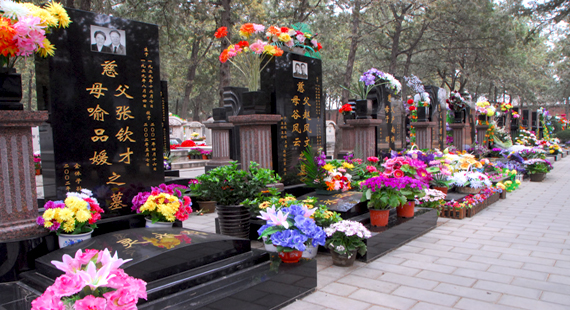
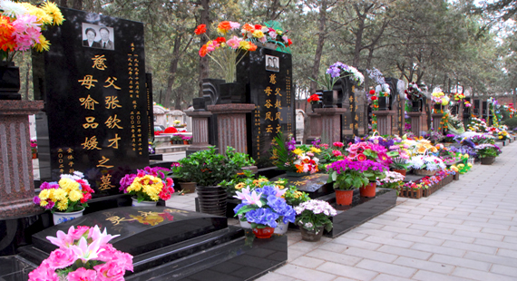

Qingming Festival:
Tomb-Sweeping Day
A traditional Chinese festival of the first day of the fifth solar term
of the Chinese lunisolar calendar. Chinese Memorial Day (Ancestors Day)
The festival last for 3 days, and usually takes place on the 4th or 5th day of April.
The holiday is a perfect example to the celebration of the virtue of
Xiao ,
known as the traditional value that children hold for their parents, and
is meant as a child's holiday to celebrate and remember relatives and ancestors
who have passed away